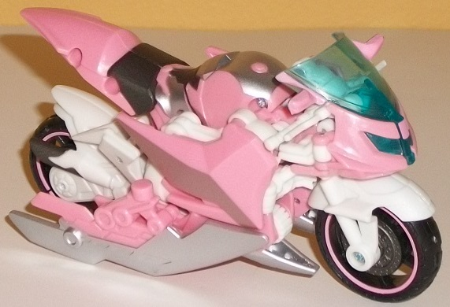
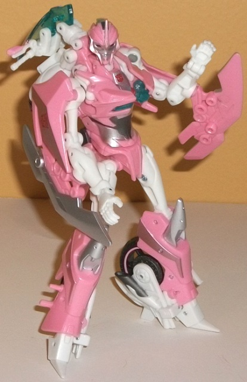
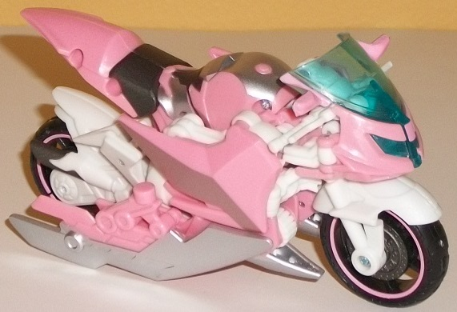
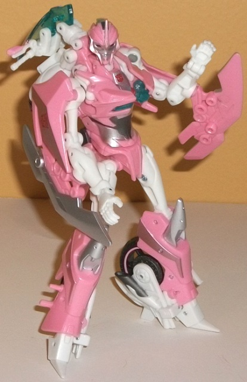
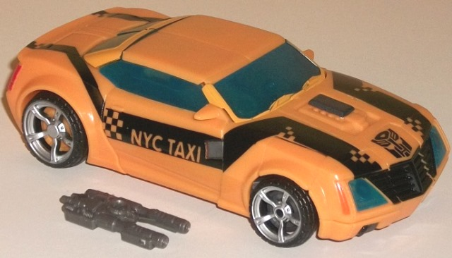
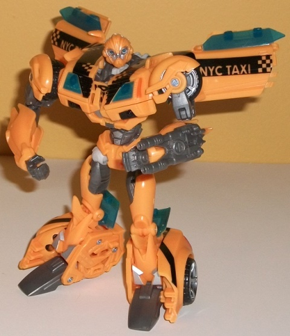
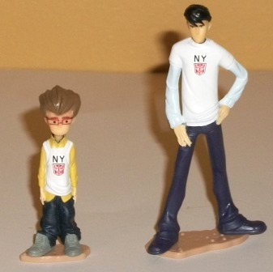

 
Size : Deluxe
Difficulty of Transformation : Easy
Color Scheme : Pink, white, silver, and some transparent light blue, black, amd metallic charcoal black and metallic gunmetal gray
Individual Rating : 7.5
Set Price
: $33 (U.S.)
Allegiances
: Autobot
Overall Rating
: 7.8
(NOTE: Because this set is composed of repaints,
this is not a full-blown review. This mainly covers any changes made to
the set and the color scheme, and merely compares it to the original versions
of these molds. For a review on the original Prime First Edition Arcee
toy, go
here
. For a review on the original
Prime First Edition Bumblebee toy, go
here
.
For a mini-review of the original figurines of Jack & Raf, go
here
.)
 Arcee
Arcee


Size
: Deluxe
Difficulty of Transformation
: Easy
Color Scheme
: Pink, white, silver,
and some transparent light blue, black, amd metallic charcoal black and
metallic gunmetal gray
Individual Rating
: 7.5
Arcee's New York Comic-Con
exclusive version-- actually the first release of this mold, before the
"regular" First Edition version came out-- has a color scheme based pretty
much entirely off of her G1 version (though she was a car and a VERY different
character in G1 compared to her Prime version). Being mostly pink and white,
it's definitely a very girly color scheme, and as such there's going to
be some who, though they acknowledge that these two colors go together
well, also aren't too fond of the color combination because it's a color
scheme you more often see in a girls' toy line than a boys', and since
you're collecting a boys' toyline, it doesn't appeal to them. I'm one of
those guys. The color scheme also just doesn't fit Arcee's character in
Prime, at all. (She actually made a "pink" joke in Season 3 of Prime, heavily
implying disgust if her color scheme would have been this. A little fourth
wall-breaking humor there, I guess.) Still, if the color scheme works for
you, or you want a more "G1-y" color scheme on any version of Arcee, it
certainly pulls that off well. There's still darker colors used where they're
needed, after all, and they largely contrast well with her lighter color
scheme-- her blades, face, knees, and part of her main body are silver,
with part of her waist being a darker, rather nice shade of metallic gunmetal
gray. There's also some black, both on her tires and used for her motorcycle
seat and exhaust pipes-- the latter two are paint, but an odd chrome-like
metallic black, which makes them pretty much the exact color of a real
motorcycle seat, something I appreciate. Her transparent plastic is blue,
which goes well with the pink and just fits the alt mode well, too.
No mold changes have
been made to NYCC Arcee.
 Bumblebee
w/ Jack & Raf
Bumblebee
w/ Jack & Raf



Size
: Deluxe
Difficulty of Transformation
: Medium
Color Scheme
: Dull orangish yellow,
swirly metallic gunmetal gray, and some black, very light gray, silver,
translucent dull turquoise, dark metallic gunmetal gray, and red
Individual Rating
: 8.2
Bumblebee doesn't get
nearly the makeover that Arcee does in this set-- he's mostly the same
palette, if not the exact same colors. His primary color is a more orangish
yellow (like many of his movie toys), and his transparent blue plastic
has been replaced with a barely-translucent dull turquoise. I like the
latter, as it contrasts with the other colors better and doesn't make the
robot parts inside the windows obvious (indeed, they aren't really visible
anymore). The orangish-yellow, while not bad, I'm not as fond of as the
"straighter" yellow on Bumblebee, as it just isn't quite as... bee-like?
I guess that would be the word. Most of Bumblebee's robot bits-- his feet,
stomach, upper legs, and the like-- are kept the same exact colors on this
version as on the original First Edition version. A few minor paint apps--
such as those on his chest-- have been mixed up a little, but nothing's
really noteworthy in this department except the really obvious ones-- the
"NYC TAXI" stripes on his vehicle mode with checkered bits here and there.
I like the checkered areas because of the visual differentiation, but this
is a pretty weak attempt at making Bumblebee look like a taxi. Because,
let's face it... he doesn't. That's why he needs those "NYC TAXI" letters
on his car doors, to let you know that that's what he's supposed to be
here. Also, the stripes aren't in quite as many places as on the original
First Edition version (for example, the roof is bare), so it doesn't make
the vehicle mode look quite as visually interesting this time around.
As for the human partners
Jack and Raf, they're largely unchanged from the First Edition giftset,
except for the obvious fact that both of them have white "NY" T-shirts
on with an Autobot symbol. It's kind of a plain way to make them New York-themed,
IMO. Maybe instead they should have painted up Raf in a taxi cab drivers'
uniform and Jack in Daniel Witwicky's outfit colors? I dunno, but as-is
they aren't doing much for me.
No mold changes have
been made to either NYCC Bumblebee or NYCC Jack & Raf.
This set is, as of this writing four years after its release, the only NYCC-exclusive Transformer set to come out, and it's fairly easy to see why they didn't do any in subsequent years. Even given that Comic Con sets are aimed at a more exclusive audience, this set has a pretty limited appeal, even at its rather reasonable convention price. Both of these molds' original color schemes I consider superior, so I can only see this appealing to A. Fans who REALLY want a G1-colored Prime Arcee, regardless of how much it fits her character; B. Bumblebee completists; or C. Transfans that have a special place in their hearts for New York City. If you don't fit into any of those categories, skip these and pick up the original First Edition versions of these molds.
Reviews by Beastbot